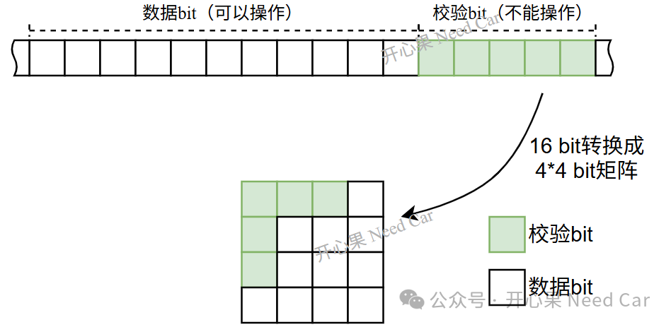

开心果 Need Car · 2026-02-27T06:19:00+08:00 · 微信原文
内存（memory）是工程问题频发的“重灾区”，也是分析问题时，着重关注的点。当然，内存的细枝末节繁多，关于内存的一些基础概念，可以参考前文《NVM基础概念》，《NvM存储的信息，你为什么看不懂？》。本文着重讨论如下几点：
Logical Sector 是什么？
ECC（Error Correction Code，错误校正码）如何产生的？
导出“用户数据”，原有的ECC问题还存在吗？
具有ECC问题，导出的数据是否可信?
Logical Sector 是什么？
在 Infineon（AURIX / Tricore 等）中：Logical Sector 是用户可见的数据抽象。也是Flash内存擦除的最小单位。Logical Sector由多个Flash Word / Page构成，ECC 位通常由硬件自动生成和存放。用户通常不可直接访问ECC位。基于16bit讨论汉明码工作原理，数据bit和校验bit示意如下：

ECC是怎么产生的？
以Infineon MCU为例，通常在Flash编程时，用户只提供“数据”，ECC由 Flash 控制器自动重新计算、重写。用户一般不能手动指定ECC位。关于ECC的纠错原理基础，可以参考前文《内存与ECC的那点事》。
一个 logical sector “有 ECC 问题”说明什么？说明Flash或者RAM物理内存区有数据错误，造成错误的常见原因包括：
Flash bit 衰退 | 老化、擦写次数过多 |
单 bit / 多 bit 错误 | ECC 检测到异常（bit反转） |
电压 / 温度问题 | 边界条件导致读错误 |
物理 Flash 损伤 | 局部 word-line / bit-line 损坏 |
注意：ECC错误是“物理层面”的问题，不是逻辑数据本身的问题
这里讨论一个问题：假设用户数据所在区域，有ECC问题，ECC问题会影响读取的数据吗？
例如：用UDE / MemTool / 自写脚本等读取带有ECC问题的logical sector内容，得到 .hex / .bin的文件数据是否可信，ECC问题是否还存在？
先说结论：导出用户数据 ≠ 解决MCU内存ECC错误
导出用户数据（无论是日志、配置信息、NVM 数据等）不会改变MCU内部 SRAM / Flash 的ECC结构，也不会修复任何ECC校验失败的问题。
如果芯片原本存在ECC错误，导出数据后这些问题依然会存在。因为ECC是硬件级、与存储阵列结构相关的功能。ECC错误通常由物理位翻转、存储损坏、供电瞬变、时序问题或软件访问错误引起。数据导出只是读出已有内容，不会修改底层存储阵列的ECC校验块。
注意：对于导出的.hex / .bin等文件，只是导出数据本身，不包含ECC / spare / redundant bits。
为什么导出数据不能清除ECC错误？MCU的ECC 一般作用于On‑chip Flash ECC，MCU Flash中每个数据行都有附带的ECC code。如果某个 Flash bit已经损坏，导出数据时可以正常读出内容（有时 ECC 会自动更正1-bit/2-bit），但是，错误仍然存在于Flash物理单元，多次导出数据也不会修复。
进一步延伸，如果内存有ECC问题，读出的数据是否可信？答：需要看错误类型。如果芯片支持1-bit/2-bit纠错功能，那么，即使有1-bit/2-bit错误，读出的数据仍然可信。如果错误的bit过多，出现multi‑bit ECC error 时，数据原本的bit模式已被破坏到ECC无法修复，则读出的数据不可信。
往期精彩回顾